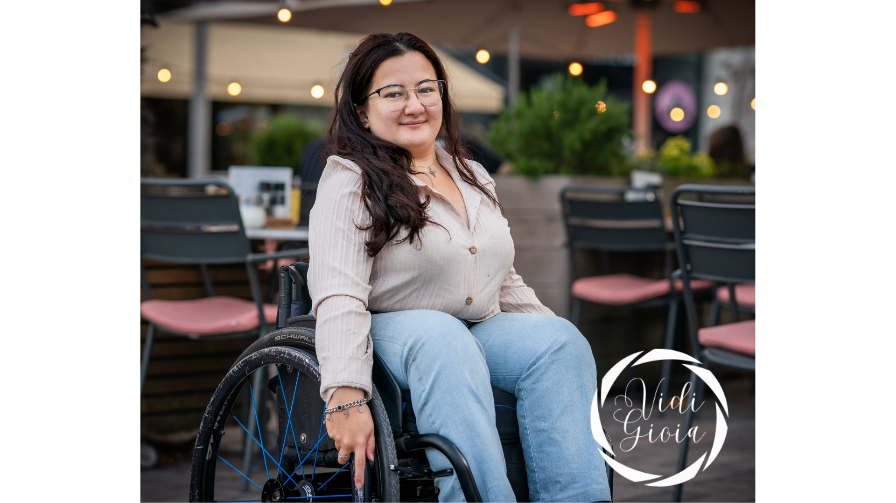

About me
Mijn naam is Syenne de Groot, eigenaar en oprichtster van ‘Vidi Gioia’. Mijn fascinatie voor fotografie stamt al af vanaf dat ik kind was. Die fascinatie groeide alleen groter toen mijn ouders een kleine, simpele, digitale camera voor mij kochten. Door ermee naar dieren- en vlindertuinen te gaan begon ik te leren hoe ik moest fotograferen, want wat moest je anders als 5-jarige met zo’n cameraatje. Mensen fotograferen? Doe niet zo mal.
Zoals je kan zien is die mening in de loop der tijd veranderd, want iets anders dat ik al doe sinds ik klein ben is mensen observeren en geluk halen uit hun geluk. En juist dat is wat ik nu met grote vreugde vastleg. Daar staat Vidi Gioia ook voor. Vidi Gioia betekent: ‘ik zie vreugde’.
Ik ben Vidi Gioia gestart met het idee om iedereen als zichzelf op de foto te laten komen. Zonder enige schaamte, onzekerheid of poses, maar met een ware glimlach. Dit is ook wat de foto puur maakt. Om het zo puur te houden maak ik ook geen gebruik van editing programma’s, alles dat in mijn portfolio te zien is ook op deze manier geschoten afgezien van het logootje onderin. Ik hoop met mijn foto’s blijdschap en positiviteit te kunnen verspreiden. Er is al genoeg grauwheid in de wereld, dus laten we klein beginnen. Eens per event maken we de wereld een klein beetje vrolijker!

Experience
Power of Reflection
- Project Kracht voor Verbinding: Creatief in bewegen 2025
- VeineDAGEN 2025
Special Social Club
- Verschillende feesten 2023 - 2025